Design Drivers
- Wants to donate on a low budget, but wants to make a value
- Likes to visit local orphanages to do volunteer work
- Wants to help where help is needed in his daily life
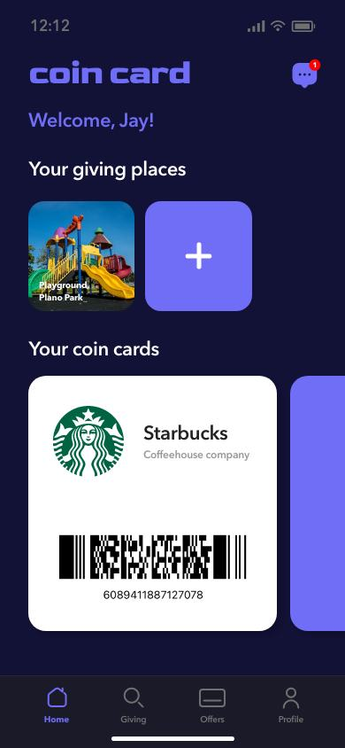
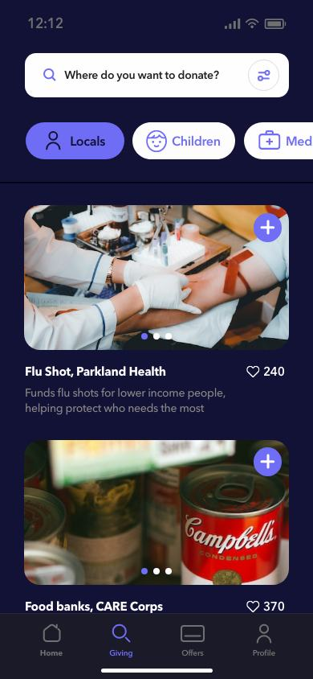
Overview & Problem
Often people think that their donations are too little to make a difference. But what happens when many people pile up small amounts of money together? This will be a small component to make a product/service and then flow to part of a system that builds a better community.
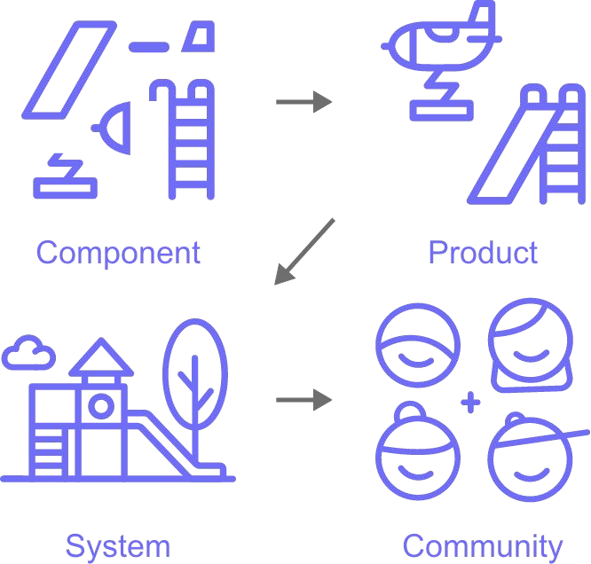
Solution
When you go to a coffee shop, you only pay for the coffee price. If you can donate a very small amount of money when you pay for it, and also the coffee shop participates the same amount of money as you did, would you miss the opportunity?
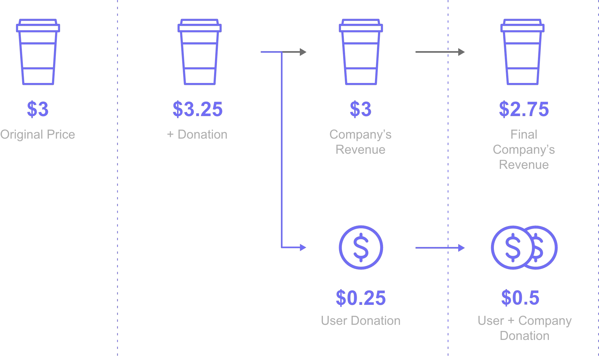
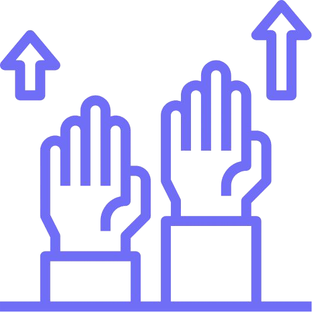
Research
More than half (56%) of Americans have donated to charity in 2021. While similar to last year’s 55%, it’s still down from pre-pandemic levels in 2019, when about two-thirds (63%) made charitable contributions.
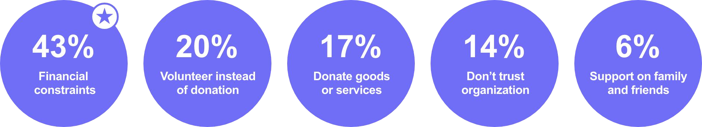
Seventy-one percent of those surveyed said their debt prevented them from donating as much as they would like. And 56% of survey respondents cited a lack of cash as a barrier to charitable giving.
More than half (56%) of Americans have donated to charity in 2021. While similar to last year’s 55%, it’s still down from pre-pandemic levels in 2019, when about two-thirds (63%) made charitable contributions.
Donated to charity in 2021
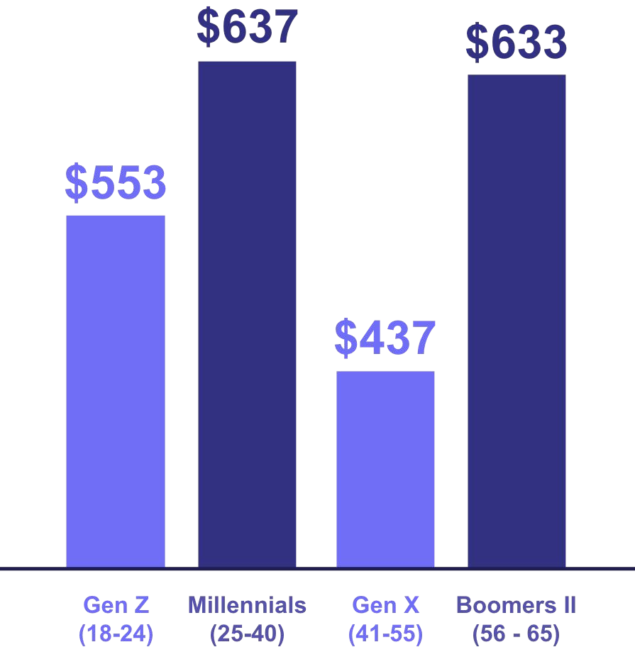
Analysis
Most donation apps focus on either providing one-time with a minimum amount or a monthly donation. They fail to provide donors with an app that will aid them in giving freely from financial constraints. The app Coin Card can differentiate itself from competitors by reducing the financial pressure found in donation apps and be easy for people to reach giving in their daily lives.
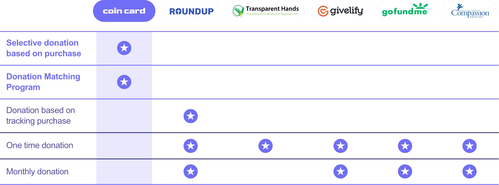
UX Design
Michael Jordan 24 year old / College student
“It is not easy to donate a certain amount of money. But I want to help my neighbor whenever I can with my small budget.”
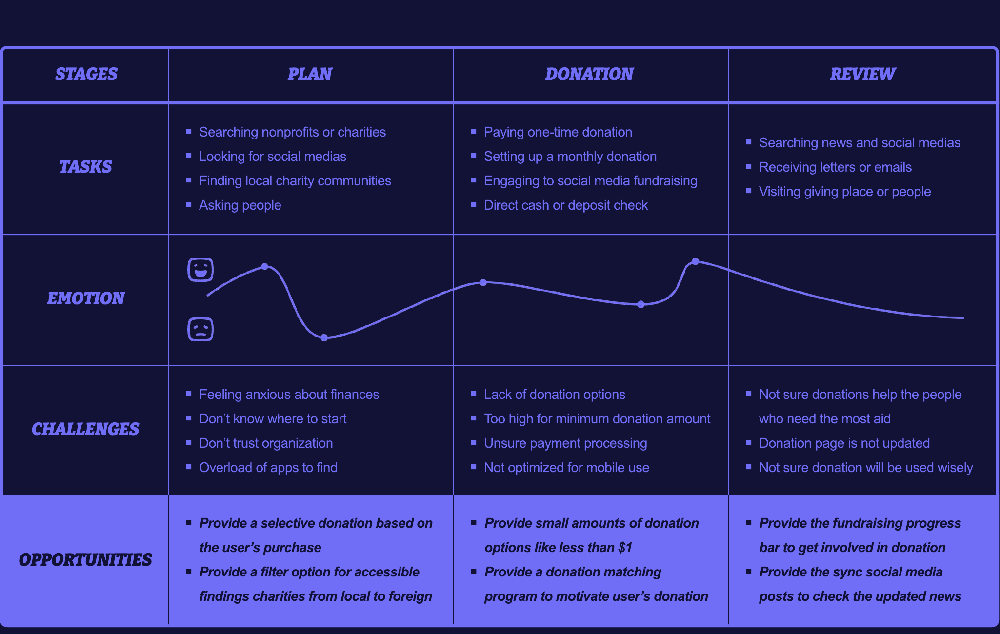
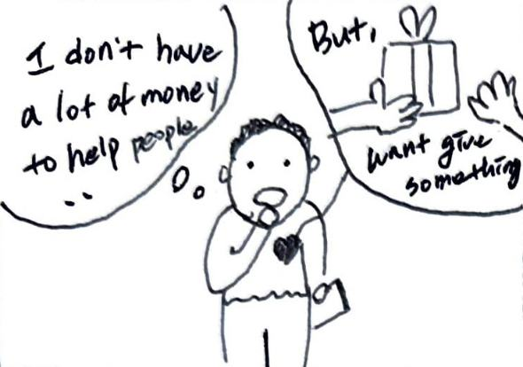
Michael wants a donation app that makes small donations and is easy to use at any time in his daily life.
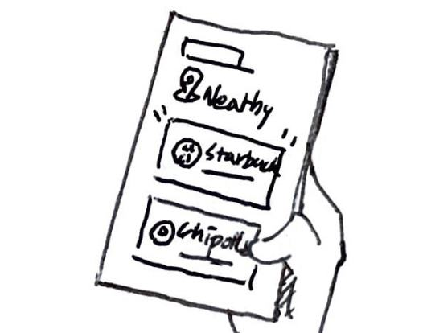
He opens the app Coin Card to find offers near him and adds it to use in donations.
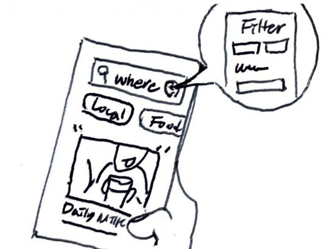
With the app, he can receive the giving list and use filters based on his interest area, and look over detailed info about the charity.
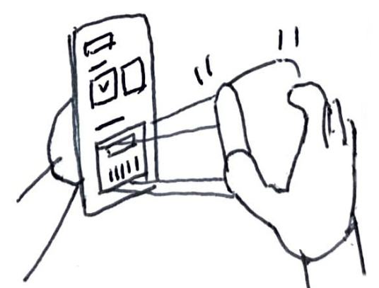
He scans the offer card to pay and donates a small amount of money with his purchasing item.
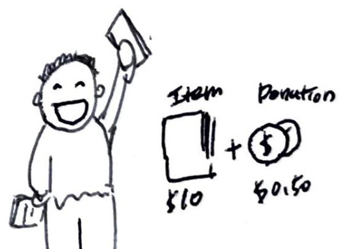
Michael finally has a tool he can donate to small amounts anytime without financial pressure and find easily where need aids.
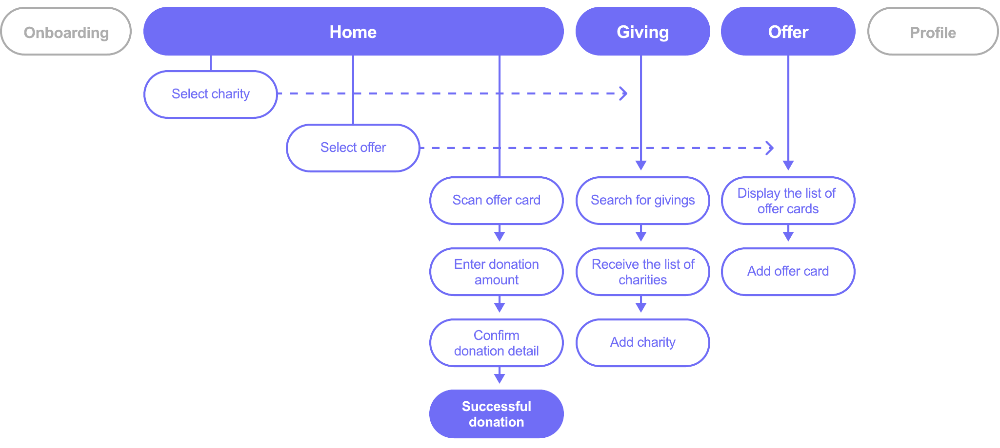
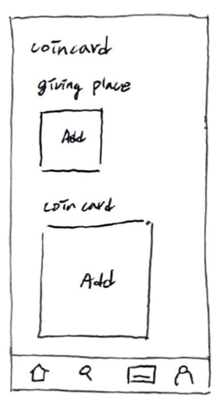
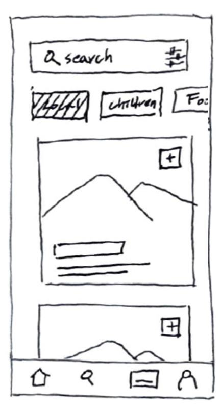
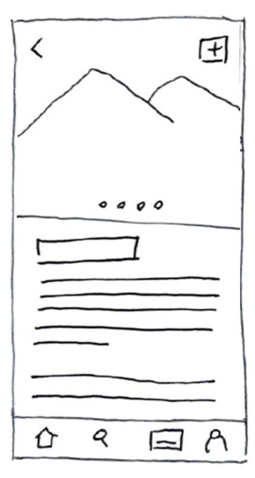
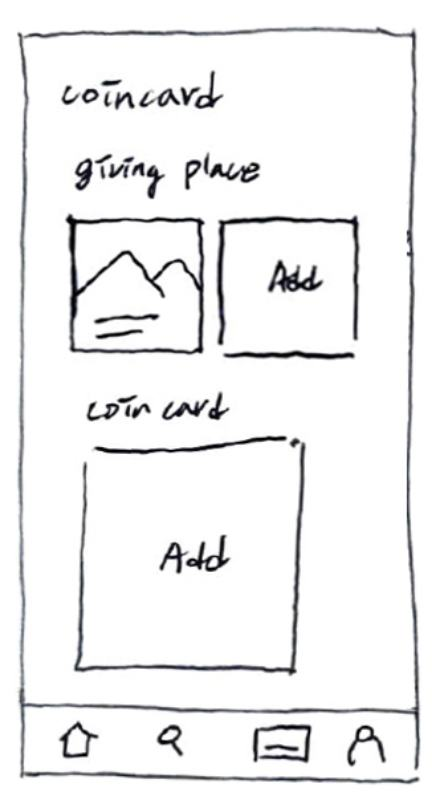
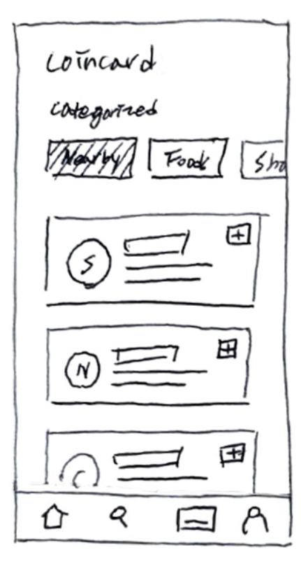
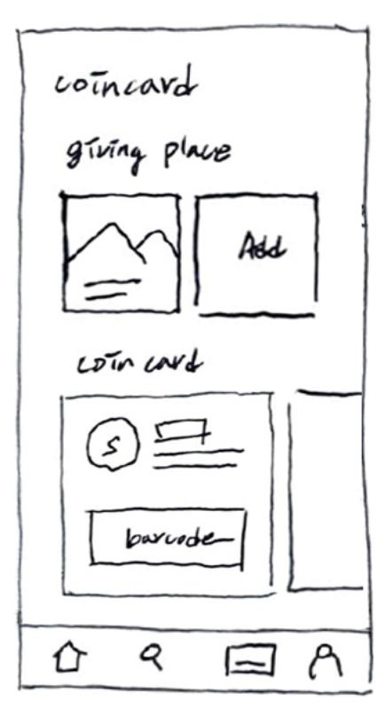
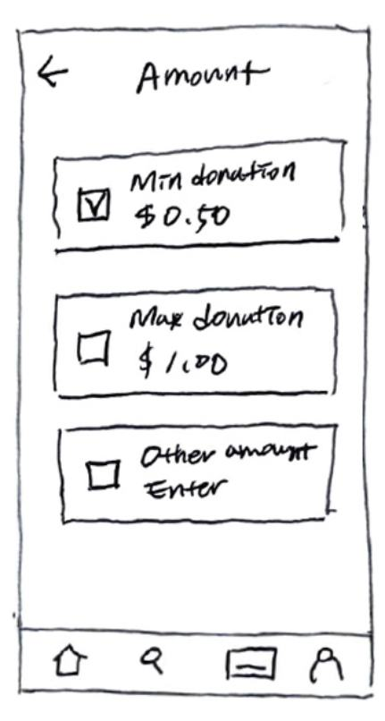
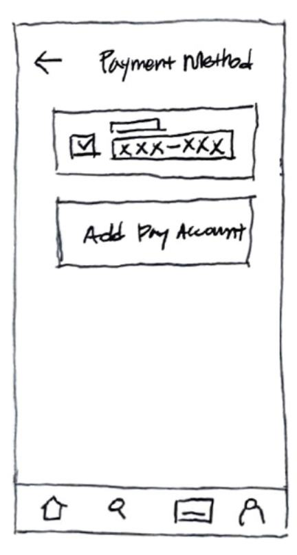
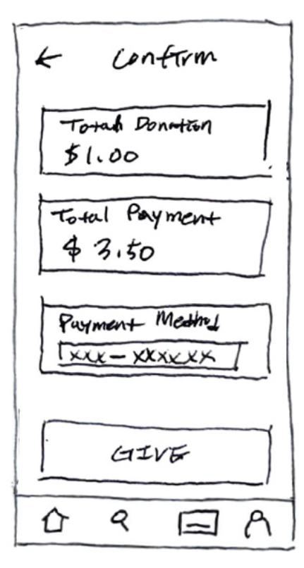
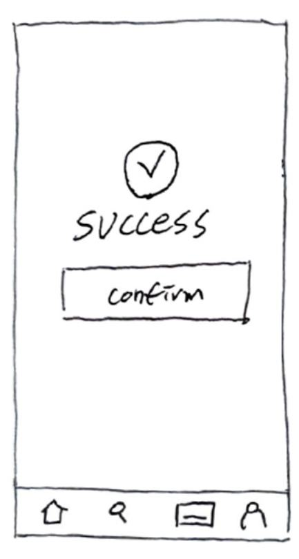